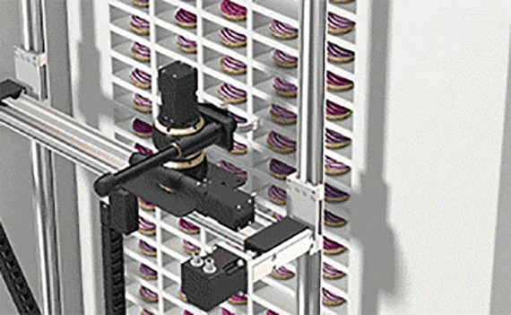
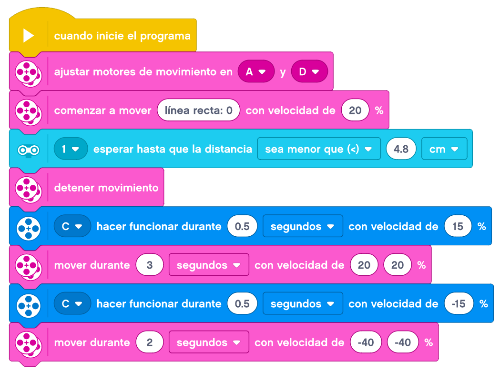
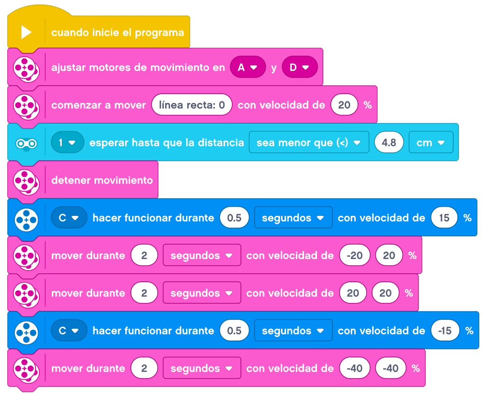

Ahora añadiremos a añadir a nuestra Base Motriz la Pinza de Arrastre con Sensor Ultrasónico.

Ahora vamos a realizar los retos del tema anterior, pero en lugar de realizar el movimiento de la base por
tiempo, lo haremos cuando detecte el objeto que tenemos delante a la suficiente distancia para que cuando
baje la pinza, lo atrape.
En un primer reto, pondremos el objeto a cierta distancia de nuestro robot.
Nuestro robot tendrá que acercarse al objeto, bajar la pinzas para atrapar nuestro objeto y transportarlo
más adelante.
Podremos poner el objeto a más o menos distancia ya que al ser el sensor ultrasónico el que detecta el
objeto, debería funcionar de la misma forma.
Un ejemplo de como podemos resolver el reto es el siguiente.

En un segundo reto, tendremos que acercarnos al objeto hasta detectarlo, bajar la pinzas y transportarlo al
sitio de origen de nuestro robot.
Un ejemplo de como podemos resolver el reto es el siguiente.
